Artificial light at night (ALAN) from coastal development is increasingly illuminating night skies in sandy beach ecosystems, which serve as critical sea turtle habitats. This nocturnal brightness can disorient endangered sea turtle hatchlings and deter adult turtles from nesting, underlying habitat reduction. In the United States, lighting assessments, guidelines, and regulations are integrated into sea turtle management. However, these protections are absent in the wider Caribbean and the U.S. Virgin Islands where there is no publicly available, ground-truthed data on light pollution. This study used ground light metrics to quantify nighttime brightness across all sea turtle habitats in St. Croix, producing the first island‑wide lighting assessment for the territory. We used a Sky Quality Meter (SQM) and a lux meter to compare how each instrument captures distinct aspects of light pollution. Light measurements were analyzed across nesting beaches and geographic regions to characterize spatial patterns of ALAN. Sea turtle data was collected from partners to evaluate how green turtle and hawksbill densities relate to light pollution, to compare disorientation patterns across beaches, and to compare the number of disorientation reports across different coastal property types. Light pollution was highest on the West End and along the North Shore where nest disorientation and mortality frequently occur at the Department of Sports, Parks and Recreation (DSPR) beaches, beachfront condominiums, hotels, and resorts. Disorientation reports were highest at DSPR beaches and the lowest at beachfront single homes. Preliminary analysis showed that increased light pollution was associated with fewer hawksbill emergences, though overall emergence numbers remained highest on the West End. This study also identified ALAN‑free sites in both developed coastal areas and remote locations, as well as the darkest coastal refugia on the island. These findings provide the first baseline, island‑wide, ground‑truthed dataset of ALAN conditions in St. Croix to serve as the basis for future lighting mitigation plans and guidelines.
SQM_west <-read.csv("SQM West End.csv")
SQM_north <-read.csv("SQM North Shore.csv")
SQM_south <-read.csv("SQM South Shore.csv")
SQM_eemp <-read.csv("SQM EEMP.csv")Visualize your data before coding. Review variables. Examples shown below.
view(SQM_west)glimpse(SQM_west)head(SQM_west)tail(SQM_west)view(SQM_west)
glimpse(SQM_west)## Rows: 126
## Columns: 28
## $ YEAR <int> 2026, 2026, 2026, 2026, 2026, 2026, 2026, 2026, 2026, 2026…
## $ MONTH <int> 5, 5, 5, 5, 5, 5, 5, 5, 5, 5, 5, 5, 5, 5, 5, 5, 5, 5, 5, 5…
## $ DAY <int> 15, 15, 15, 15, 15, 15, 15, 15, 15, 15, 15, 15, 16, 16, 16…
## $ DATE <chr> "5/15/2026", "5/15/2026", "5/15/2026", "5/15/2026", "5/15/…
## $ ISLAND <chr> "STX", "STX", "STX", "STX", "STX", "STX", "STX", "STX", "S…
## $ LOCATION <chr> "SPNWR West ", "SPNWR West ", "SPNWR West ", "SPNWR West "…
## $ STANDARD.NAME <chr> "SPNWR West ", "SPNWR West ", "SPNWR West ", "SPNWR West "…
## $ LAT_DEGREES <chr> "17.67467", "17.67511", "17.67554", "17.67594", "17.6763",…
## $ LON_DEGREES <dbl> -64.90089, -64.90100, -64.90115, -64.90138, -64.90166, -64…
## $ START.TIME <chr> "21:10", "21:10", "21:10", "21:10", "21:10", "21:10", "21:…
## $ END.TIME <chr> "2:30", "2:30", "2:30", "2:30", "2:30", "2:30", "2:30", "2…
## $ WEATHER <chr> "Mostly Cloudy", "Mostly Cloudy", "Mostly Cloudy", "Mostly…
## $ CLOUD.COVER <chr> "60-80%", "60-80%", "60-80%", "60-80%", "60-80%", "60-80%"…
## $ MOON.CONDITIONS <chr> "Crescent waning ", "Crescent waning ", "Crescent waning "…
## $ MOON.ILLUMINATION <chr> "2.00%", "2.00%", "2.00%", "2.00%", "2.00%", "2.00%", "2.0…
## $ POINTS <int> 1, 2, 3, 4, 5, 6, 7, 8, 9, 10, 11, 12, 1, 2, 3, 4, 5, 6, 7…
## $ RECORDERS <chr> "Romina and Sabrina", "Romina and Sabrina", "Romina and Sa…
## $ SQM..LW. <dbl> 18.97, 19.25, 19.41, 17.93, 18.11, 17.71, 18.63, 18.28, 18…
## $ SQM..S. <dbl> 20.93, 20.70, 21.02, 20.61, 20.22, 20.52, 20.03, 19.80, 19…
## $ SQM..SW. <dbl> 20.86, 20.96, 21.14, 20.81, 20.85, 20.85, 20.87, 20.58, 20…
## $ SQM..N. <dbl> 19.90, 20.87, 20.73, 20.39, 20.63, 20.52, 20.32, 20.35, 20…
## $ SQM.ZENITH <dbl> NA, 20.99, 20.95, 20.90, 20.92, 20.88, 20.25, 20.05, 18.97…
## $ AVERAGE.SQM <dbl> 20.17, 20.45, 20.58, 19.94, 19.95, 19.90, 19.96, 19.75, 19…
## $ LUX.1 <dbl> 0.00, 0.00, 0.00, 0.00, 0.00, 0.00, 0.00, 0.00, 0.00, 0.00…
## $ LUX.2 <dbl> 0.00, 0.00, 0.00, 0.00, 0.00, 0.00, 0.00, 0.00, 0.00, 0.00…
## $ LUX.3 <dbl> 0.00, 0.00, 0.00, 0.00, 0.00, 0.00, 0.00, 0.00, 0.00, 0.00…
## $ AVERAGE.LUX <dbl> 0.00, 0.00, 0.00, 0.00, 0.00, 0.00, 0.00, 0.00, 0.00, 0.00…
## $ Notes <chr> "Redid zenith measurement on 6/16/26. This first marker is…Secondary Datasets
Make a new data name for all CSV files. Tip: Type str(lw_west) in the console to make sure your data that you want to analyze is all numeric and not in character or else you have to convert it.
lw_west <-SQM_west%>%
select(STANDARD.NAME, LOCATION, POINTS, SQM..LW.)%>%
mutate(REGION="West End")
lw_north <-SQM_north%>%
select(STANDARD.NAME, LOCATION, POINTS, SQM..LW.)%>%
mutate(REGION="North Shore")
lw_south <-SQM_south%>%
select(STANDARD.NAME, LOCATION, POINTS, SQM..LW.)%>%
mutate(REGION="South Shore")
lw_eemp <-SQM_eemp%>%
select(STANDARD.NAME, LOCATION, POINTS, SQM..LW.)%>%
mutate(REGION="East End")Combine the landward values from each data set, stack them together.
lw_stx <-rbind(lw_west, lw_north, lw_south, lw_eemp)
lw_stx <-lw_stx%>%
filter(LOCATION!="")%>% #removes blanks under location
drop_na()Calculate SQM landward averages for each nesting beach. Take the average of all the points for each survey site.
stx_lw_analysis <- lw_stx %>%
mutate(SQM..LW. = as.numeric(SQM..LW.)) %>%
group_by(LOCATION, REGION) %>%
summarise(
points = max(POINTS, na.rm = TRUE),
lw_avg = mean(SQM..LW., na.rm = TRUE),
lw_median = median(SQM..LW., na.rm = TRUE),
lw_min = min(SQM..LW., na.rm = TRUE),
lw_max = max(SQM..LW., na.rm = TRUE),
lw_range = lw_max - lw_min,
lw_se = std.error(SQM..LW.),
STANDARD.NAME = first(STANDARD.NAME)
) %>%
ungroup()## Warning: There was 1 warning in `mutate()`.
## ℹ In argument: `SQM..LW. = as.numeric(SQM..LW.)`.
## Caused by warning:
## ! NAs introduced by coercion## `summarise()` has grouped output by 'LOCATION'. You can override using the `.groups`
## argument.write.csv(stx_lw_analysis,"SQM LW List of Beaches .csv")Top 10 Darkest Beaches in St. Croix
lw_darkest <-stx_lw_analysis%>%
slice_max(order_by=lw_avg, n = 10)
write.csv(lw_darkest,"LW Darkest Beaches.csv")Top 10 Brightest Beaches in St. Croix
lw_brightest <-stx_lw_analysis%>%
slice_min(order_by=lw_avg, n=10)
write.csv(lw_brightest,"LW Brightest Beaches.csv")Landward values for the West End
lw_boxplot<-stx_lw_analysis%>%
select(LOCATION, REGION, lw_avg, lw_median, lw_min, lw_max, lw_range)%>%
filter(REGION == "West End")Scatter plot of nesting beaches in the West End.
ggplot(lw_boxplot, aes(x = reorder(LOCATION, -lw_avg), y = lw_avg, color = LOCATION)) +
geom_point(color = "black", size = 3.5) +
theme_bw() +
ylim(0, 25) +
labs(
x = "West End Beaches",
y = "Landward Brightness (mag/arcsecs)"
) +
guides(fill = FALSE)+
theme(
axis.text.x = element_text(angle = 90, vjust = 0.5, hjust = 1),
axis.title.y = element_text(margin = margin(r = 10)))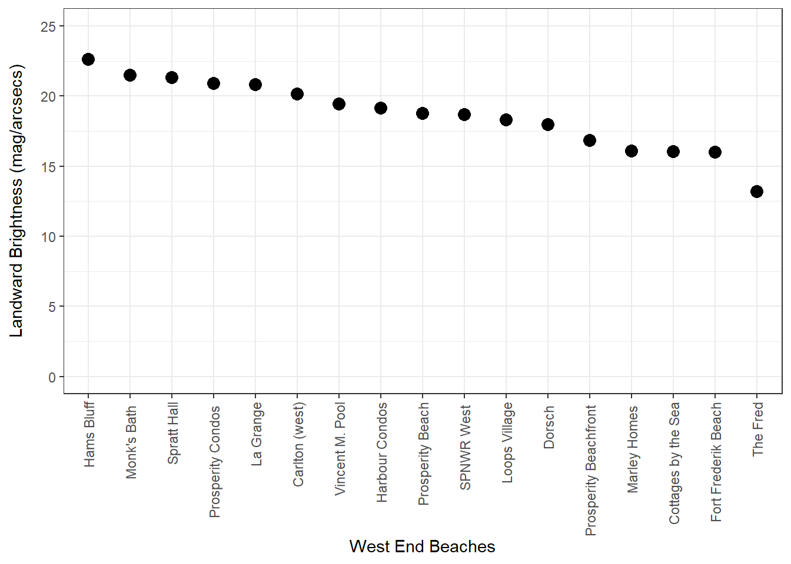
Light Data for Zenith Skies
zenith_west <-SQM_west%>%
select(STANDARD.NAME, LOCATION, POINTS, SQM.ZENITH)%>%
mutate(REGION="West End")
zenith_north <-SQM_north%>%
select(STANDARD.NAME, LOCATION, POINTS, SQM.ZENITH)%>%
mutate(REGION="North Shore")
zenith_south <-SQM_south%>%
select(STANDARD.NAME, LOCATION, POINTS, SQM.ZENITH)%>%
mutate(REGION="South Shore")
zenith_eemp <-SQM_eemp%>%
select(STANDARD.NAME, LOCATION, POINTS, SQM.ZENITH)%>%
mutate(REGION="East End")Combine the data sets and stack them together.
zenith_stx <-rbind(zenith_west, zenith_north, zenith_south, zenith_eemp)
zenith_stx_clean <- zenith_stx %>%
mutate(
SQM.ZENITH = as.numeric(SQM.ZENITH),
LOCATION = trimws(LOCATION),
STANDARD.NAME = trimws(STANDARD.NAME))## Warning: There was 1 warning in `mutate()`.
## ℹ In argument: `SQM.ZENITH = as.numeric(SQM.ZENITH)`.
## Caused by warning:
## ! NAs introduced by coercionCalculate zenith averages for each beach. Take the average of all the points for each site.
stx_zenith_analysis <-zenith_stx_clean%>%
group_by(LOCATION, REGION)%>%
summarise(points=max(POINTS),
zenith_avg=mean(SQM.ZENITH,na.rm=T),
zenith_median=median(SQM.ZENITH,na.rm=T),
zenith_min=min(SQM.ZENITH),
zenith_max=max(SQM.ZENITH),
zenith_range=zenith_max-zenith_min,
STANDARD.NAME=first(STANDARD.NAME))%>%
ungroup()## `summarise()` has grouped output by 'LOCATION'. You can override using the `.groups`
## argument.Top 10 Darkest Zenith Skies
zenith_darkest <-stx_zenith_analysis%>%
slice_max(order_by=zenith_avg, n = 10)
write.csv(zenith_darkest,"Zenith Darkest Beaches.csv")Top 10 Brightest Zenith Skies
zenith_brightest <-stx_zenith_analysis%>%
slice_min(order_by=zenith_avg, n=10)
write.csv(lw_brightest,"Zenith Brightest Skies.csv")Zenith Values for St. Croix
zenith_boxplot<-stx_zenith_analysis%>%
select(LOCATION, REGION, zenith_avg, zenith_median, zenith_min, zenith_max, zenith_range)Zenith Plot for St. Croix Beaches
ggplot(zenith_boxplot, aes(x = reorder(LOCATION, -zenith_avg), y = zenith_avg, color = LOCATION)) +
geom_point(color = "black", size = 3.5) +
theme_bw() +
ylim(0, 25) +
labs(
x = "Nesting Beaches",
y = "Zenith Brightness (mag/arcsecs)"
) +
guides(fill = FALSE)+
theme(
axis.text.x = element_text(angle = 90, vjust = 0.5, hjust = 1, color = "black"),
axis.title.y = element_text(margin = margin(r = 10), color = "black"))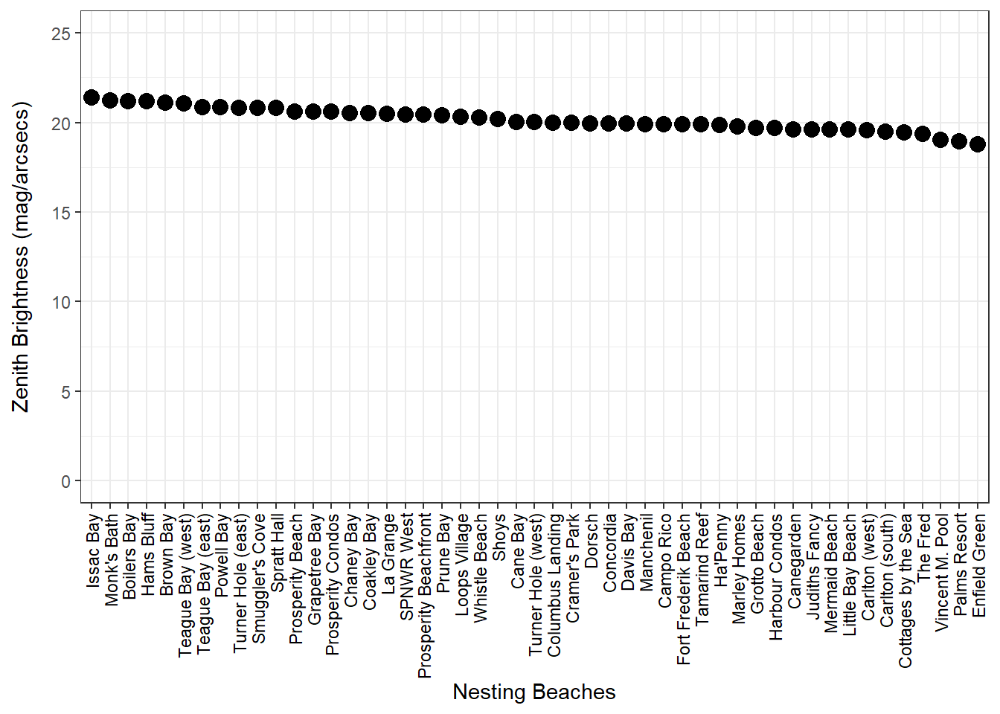
Cleveland Dot Plot for Zenith Averages (Different Style Plot)
ggplot(zenith_boxplot, aes(x = reorder(LOCATION, -zenith_avg), y = zenith_avg)) +
geom_segment(
aes(xend = reorder(LOCATION, -zenith_avg), yend = 0),
color = "grey75",
linewidth = 0.6
) +
geom_point(color = "black", size = 3.5) +
theme_bw() +
ylim(0, 25) +
labs(
x = "Sea Turtle Beaches",
y = "Zenith Brightness (mag/arcsecs)"
) +
theme(
axis.text = element_text(color = "black"),
axis.title = element_text(color = "black"),
axis.text.x = element_text(angle = 90, vjust = 0.5, hjust = 1, color = "black"),
axis.title.y = element_text(margin = margin(r = 10), color = "black"),
panel.grid.major.x = element_blank(),
panel.grid.minor.x = element_blank()
)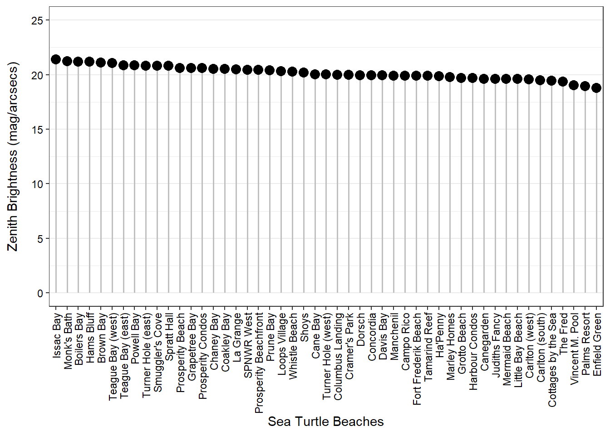
Light Data for Seaward Horizon
seaward_west <-SQM_west%>%
select(STANDARD.NAME, LOCATION, POINTS, SQM..SW.)%>%
mutate(REGION="West End")
seaward_north <-SQM_north%>%
select(STANDARD.NAME, LOCATION, POINTS, SQM..SW.)%>%
mutate(REGION="North Shore")
seaward_south <-SQM_south%>%
select(STANDARD.NAME, LOCATION, POINTS, SQM..SW.)%>%
mutate(REGION="South Shore")
seaward_eemp <-SQM_eemp%>%
select(STANDARD.NAME, LOCATION, POINTS, SQM..SW.)%>%
mutate(REGION="East End")Combine the data sets and stack them together.
seaward_stx <-rbind(seaward_west, seaward_north, seaward_south, seaward_eemp)Remove NA’s in the data set.
seaward_stx_clean<-seaward_stx%>%
filter(LOCATION!="")%>% #removes NA's
filter(SQM..SW.!="")%>% #removes NA's
mutate(LOCATION=as.factor(LOCATION),REGION=as.factor(REGION))
seaward_stx_clean <- seaward_stx %>%
mutate(
SQM..SW. = as.numeric(SQM..SW.),
LOCATION = as.factor(trimws(LOCATION)),
STANDARD.NAME = trimws(STANDARD.NAME),
REGION = as.factor(trimws(REGION))) %>%
drop_na(LOCATION, POINTS, SQM..SW., REGION)## Warning: There was 1 warning in `mutate()`.
## ℹ In argument: `SQM..SW. = as.numeric(SQM..SW.)`.
## Caused by warning:
## ! NAs introduced by coercionstx_seaward_analysis <-seaward_stx_clean%>%
group_by(LOCATION, REGION)%>% #this will create one line per beach
summarise(points=max(POINTS),
seaward_avg=mean(SQM..SW.,na.rm=T),
seaward_median=median(SQM..SW.,na.rm=T),
seaward_min=min(SQM..SW.),
seaward_max=max(SQM..SW.),
seaward_range=seaward_max-seaward_min,
STANDARD.NAME=first(STANDARD.NAME))%>%
ungroup()## `summarise()` has grouped output by 'LOCATION'. You can override using the `.groups`
## argument.write.csv(stx_seaward_analysis,"SQM SW List of Beaches .csv")Top 10 Darkest Seaward Skies
seaward_darkest <-stx_seaward_analysis%>%
slice_max(order_by=seaward_avg, n = 10)
write.csv(seaward_darkest,"Darkest Seaward Skies.csv")Top 10 Brightest Seaward Skies
seaward_brightest <-stx_seaward_analysis%>%
slice_min(order_by=seaward_avg, n=10)
write.csv(seaward_brightest,"Brightest Seaward Skies.csv")Seaward values for St. Croix
seaward_boxplot<-stx_seaward_analysis%>%
select(LOCATION, REGION, seaward_avg, seaward_median, seaward_min, seaward_max, seaward_range)Cleveland Dot Plot - Seaward Averages
ggplot(seaward_boxplot, aes(x = reorder(LOCATION, -seaward_avg), y = seaward_avg, color = LOCATION)) +
geom_segment(
aes(xend = reorder(LOCATION, -seaward_avg), yend = 0),
color = "grey75", # Muted grey so it doesn't distract from the dots
linewidth = 0.6 # Clean, thin line weight
) +
geom_point(color = "black", size = 3.5) +
theme_bw() +
ylim(0, 25) +
labs(
x = "Sea Turtle Habitats",
y = "Seaward Brightness (mag/arcsecs)"
) +
guides(fill = FALSE)+
theme(
axis.text.x = element_text(angle = 90, vjust = 0.5, hjust = 1, color = "black"),
axis.title.y = element_text(margin = margin(r = 10), color = "black"))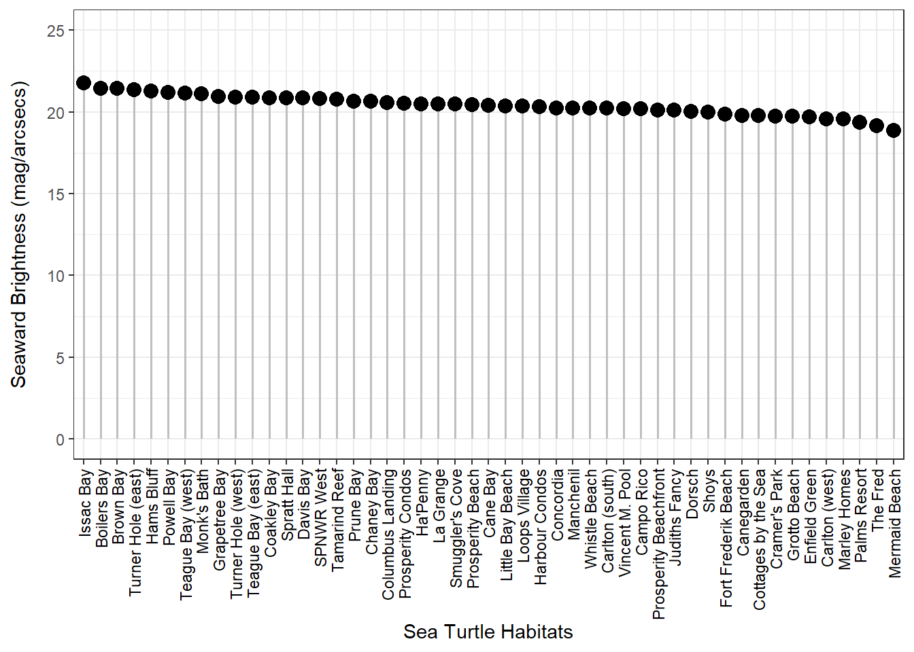
Combine Landward, Seaward and Zenith Averages to make a Scatter Plot
avg_landward <-stx_lw_analysis%>%
select(LOCATION,REGION,lw_avg)
write.csv(avg_landward,"LW Averages Across Beaches.csv")
avg_seaward <-stx_seaward_analysis%>%
select(LOCATION,REGION, seaward_avg)
avg_zenith <-stx_zenith_analysis%>%
select(LOCATION,REGION, zenith_avg)
# Merge the average data sets together
combined_averages <- avg_zenith %>%
left_join(avg_seaward, by = c("LOCATION", "REGION")) %>%
left_join(avg_landward, by = c("LOCATION", "REGION"))
write.csv(combined_averages,"Clean SQM Data.csv")Combine averages for landward, seaward and zenith in a plot. Reshape the data to long.
combined_long <- combined_averages %>%
pivot_longer(
cols = c(lw_avg, seaward_avg, zenith_avg),
names_to = "Measurement_Type",
values_to = "Brightness_Value")Vertical Plot
ggplot(combined_long, aes(x = reorder(LOCATION, -Brightness_Value), y = Brightness_Value, color = Measurement_Type)) +
geom_point(size = 4, alpha = 0.8) +
theme_bw() +
ylim(10, 25) +
labs(
x = "Sea Turtle Habitats",
y = "Nighttime Sky Brightness (mag/arcsec²)",
color = "Measurement Direction"
) +
scale_color_manual(
values = c("lw_avg" = "#E69F00", "seaward_avg" = "#56B4E9", "zenith_avg" = "#000000"),
labels = c("Landward Avg", "Seaward Avg", "Zenith Avg")
) +
coord_flip() + # <-- This flips the X and Y axes
theme(
axis.text.y = element_text(color = "black", size = 8),
axis.title.x = element_text(margin = margin(t = 13)),
legend.position = "right")## Warning: Removed 7 rows containing missing values or values outside the scale range
## (`geom_point()`).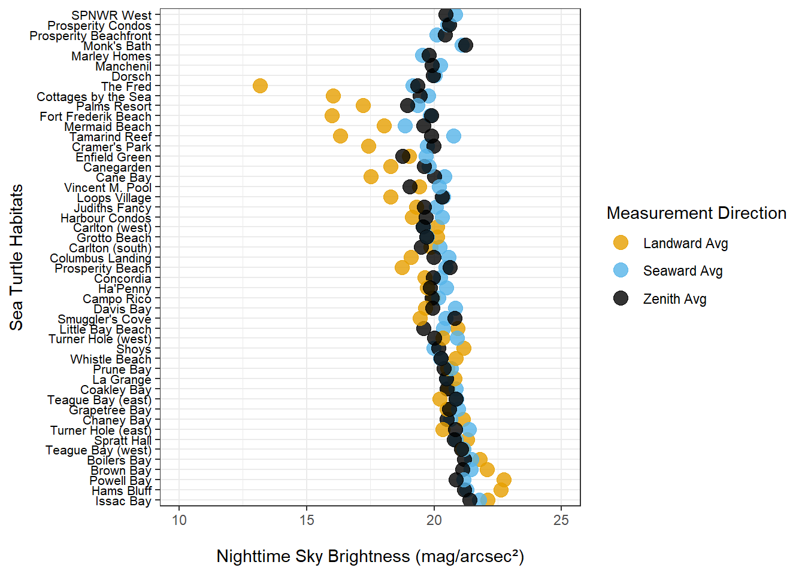
Combination for West End
sqm_averages_west <-combined_averages%>%
filter(REGION == "West End")Simple scatter plot for the West End
ggplot(sqm_averages_west, aes(x = LOCATION, y = lw_avg, color = LOCATION)) +
geom_point(size = 4, color="black") +
scale_color_viridis_d(option = "viridis", direction=-1) + # clean Viridis color scheme
theme_bw() +
ylim(10, 25) + # I changed the SQM to 0-25 mag/arcsec2
labs(
x = "West End",
y = "Brightness (mag/arcsec²)"
) +
theme(axis.text.x = element_text(angle = 90, vjust = 0.5, hjust = 1, color="black"))## Warning: Removed 6 rows containing missing values or values outside the scale range
## (`geom_point()`).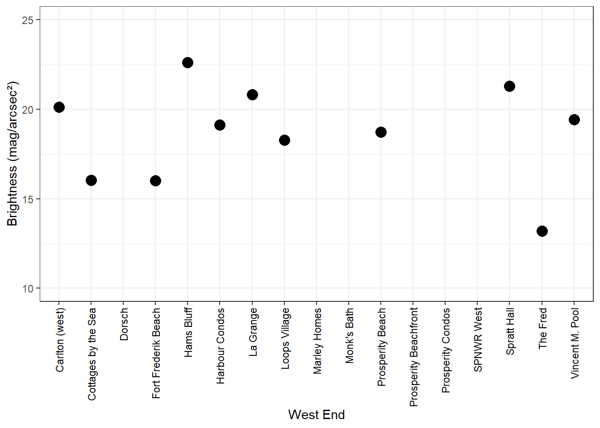
Combine cardinal directions for Frederiksted’s Beaches
plot_data_west <- sqm_averages_west %>%
pivot_longer(
cols = c(lw_avg, seaward_avg, zenith_avg),
names_to = "Measurement_Type",
values_to = "Brightness")
ggplot(plot_data_west, aes(x = reorder(LOCATION, -Brightness), y = Brightness, fill = Measurement_Type)) +
geom_point(shape = 21, color = "black", size = 5, alpha = 0.8, stroke = 1.2) +
scale_fill_manual(
values = c(
"lw_avg" = "#FFEA46", # orange for landward
"seaward_avg" = "#D55E00", # blue for seaward
"zenith_avg" = "#00204D" # purple for zenith
),
labels = c("Landward Horizon", "Seaward Horizon", "Zenith")
) +
labs(
x = "West End Habitats",
y = "Brightness (mag/arcsec²)",
fill = NULL # Removes the legend title box header for a cleaner look
) +
ylim(10, 25) +
theme_classic(base_size = 12) +
theme(
legend.position = "top",
legend.direction = "horizontal",
axis.text.x = element_text(angle = 90, vjust = 0.5, hjust = 1),
axis.title.y = element_text(margin = margin(r = 12)))## Warning: Removed 6 rows containing missing values or values outside the scale range
## (`geom_point()`).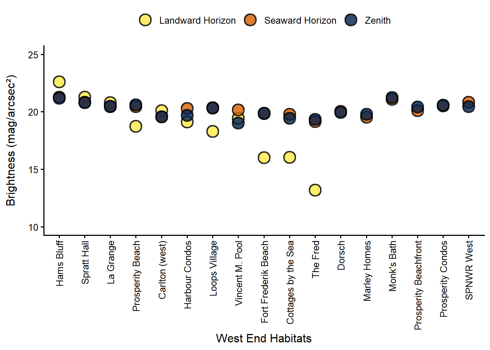
Brightness Scale for West End Beaches (Combination LW, SW and Zenith)
ggplot(plot_data_west, aes(x = LOCATION, y = Brightness, color = Brightness, shape=Measurement_Type)) +
geom_point(size = 5, alpha = 0.9) +
scale_color_viridis_c(name= "Sky Brightness Units", option = "viridis", direction = -1) +
theme_bw() +
ylim(10, 25) +
labs(
x = "West End Beaches",
y = "Brightness (mag/arcsecs)",
color = "Brightness",
shape = "Measurement Direction",
) +
theme(
panel.background = element_rect(fill = "white", color = NA),
legend.title = element_text(hjust = 0.5),
axis.title.y = element_text(margin = margin(r = 10)),
axis.text.y = element_text(color = "black"),
axis.text.x = element_text(angle = 90, vjust = 0.5, hjust = 1, color="black"))## Warning: Removed 6 rows containing missing values or values outside the scale range
## (`geom_point()`).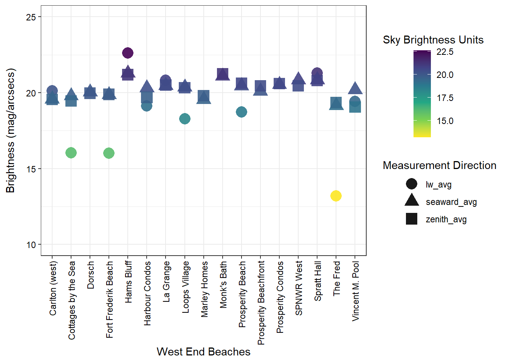
Combine averages for North Shore
sqm_averages_north <-combined_averages%>%
filter(REGION == "North Shore")Combine cardinal directions for North Shore. Reshape the data to long.
plot_data_north <- sqm_averages_north %>%
pivot_longer(
cols = c(lw_avg, seaward_avg, zenith_avg),
names_to = "Measurement_Type",
values_to = "Brightness")Scale for North Shore Beaches (Combination LW, SW and Zenith)
ggplot(plot_data_north, aes(x = reorder(LOCATION, -Brightness), y = Brightness, color = Measurement_Type, shape = Measurement_Type)) +
geom_point(size = 4, alpha = 0.8) +
theme_bw() +
labs(
x = "North Shore Beaches",
y = "Brightness (mag/arcsec²)",
color = "Measurement Type",
shape = "Measurement Type"
) +
# Using the colorblind-friendly palette
scale_color_manual(
values = c("lw_avg" = "#E69F00", "seaward_avg" = "#56B4E9", "zenith_avg" = "#000000"),
labels = c("Landward Avg", "Seaward Avg", "Zenith Avg")
) +
scale_shape_manual(
values = c("lw_avg" = 16, "seaward_avg" = 17, "zenith_avg" = 15), # Circle, Triangle, Square
labels = c("Landward Avg", "Seaward Avg", "Zenith Avg")
) +
theme(
panel.background = element_rect(fill = "white", color = NA),
axis.text.y = element_text(color = "black", size = 9),
axis.title.x = element_text(margin = margin(t = 15)),
axis.text.x = element_text(angle = 90, vjust = 0.5, hjust = 1, color="black"),
legend.position = "right")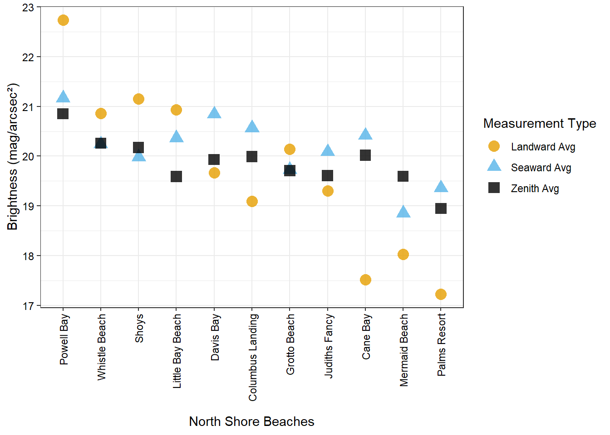
Brightness Scale for North Shore Beaches
ggplot(plot_data_north, aes(x = reorder(LOCATION, -Brightness), y = Brightness, color = Brightness, shape = Measurement_Type)) +
geom_point(size = 5.5, alpha = 0.8) +
theme_bw() +
labs(
x = "North Shore Beaches",
y = "Brightness (mag/arcsec²)",
color = "Brightness",
shape = "Measurement Direction") +
# Viridis continuous color scale
scale_color_viridis_c(name = "Sky Brightness Units", option = "viridis", direction= -1) +
scale_shape_manual(
values = c("lw_avg" = 16, "seaward_avg" = 17, "zenith_avg" = 15),
labels = c("Landward Avg", "Seaward Avg", "Zenith Avg")) +
theme(
panel.background = element_rect(fill = "white", color = NA),
axis.text.y = element_text(color = "black", size = 9),
axis.title.y = element_text(margin = margin(r = 10)),
axis.text.x = element_text(angle = 90, vjust = 0.5, hjust = 1, color= "black"),
axis.title.x = element_text(margin = margin(t = 15)),
legend.title = element_text(hjust = 0.5),
legend.position = "right")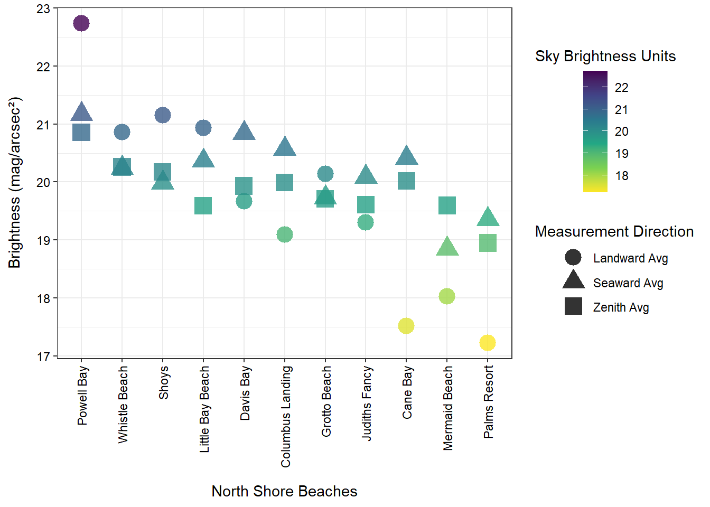
Combine averages for South Shore
sqm_averages_south <-combined_averages%>%
filter(REGION == "South Shore")Combine cardinal directions for South Shore. Reshape the data to long.
plot_data_south <- sqm_averages_south %>%
pivot_longer(
cols = c(lw_avg, seaward_avg, zenith_avg),
names_to = "Measurement_Type",
values_to = "Brightness")Brightness Scale for South Shore Beaches
ggplot(plot_data_south, aes(x = reorder(LOCATION, -Brightness), y = Brightness, color = Brightness, shape = Measurement_Type)) +
geom_point(size = 5, alpha = 0.8) +
theme_bw() +
labs(
x = "South Shore Beaches",
y = "Brightness (mag/arcsec²)",
color = "Brightness",
shape = "Measurement Direction") +
# Viridis continuous color scale
scale_color_viridis_c(name = "Sky Brightness Units", option = "viridis", direction= -1) +
scale_shape_manual(
values = c("lw_avg" = 16, "seaward_avg" = 17, "zenith_avg" = 15),
labels = c("Landward Avg", "Seaward Avg", "Zenith Avg")) +
theme(
panel.background = element_rect(fill = "white", color = NA),
axis.text.y = element_text(color = "black", size = 9),
axis.title.y = element_text(margin = margin(r = 10)),
axis.text.x = element_text(angle = 90, vjust = 0.5, hjust = 1, color= "black"),
axis.title.x = element_text(margin = margin(t = 15)),
legend.title = element_text(hjust = 0.5),
legend.position = "right")## Warning: Removed 1 row containing missing values or values outside the scale range
## (`geom_point()`).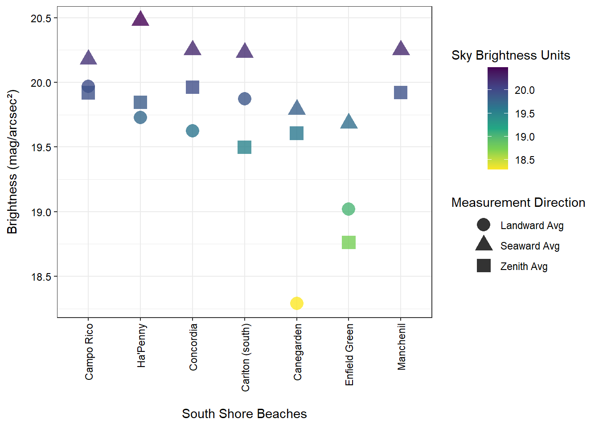
Brightness Scale for East End Marine Park
Combine values
sqm_averages_eemp <-combined_averages%>%
filter(REGION == "East End")Combine all cardinal directions for the EEMP. Reshape the data to long.
plot_data_eemp <- sqm_averages_eemp %>%
pivot_longer(
cols = c(lw_avg, seaward_avg, zenith_avg),
names_to = "Measurement_Type",
values_to = "Brightness")
ggplot(plot_data_eemp, aes(x = reorder(LOCATION, -Brightness), y = Brightness, color = Brightness, shape = Measurement_Type)) +
geom_point(size = 5.5, alpha = 0.8) +
theme_bw() +
labs(
x = "East End Marine Park",
y = "Brightness (mag/arcsec²)",
color = "Brightness",
shape = "Measurement Direction") +
# Viridis continuous color scale
scale_color_viridis_c(name = "Sky Brightness Units", option = "viridis", direction= -1) +
scale_shape_manual(
values = c("lw_avg" = 16, "seaward_avg" = 17, "zenith_avg" = 15),
labels = c("Landward Avg", "Seaward Avg", "Zenith Avg")) +
ylim(15,25)+
theme(
panel.background = element_rect(fill = "white", color = NA),
axis.text.y = element_text(color = "black", size = 9),
axis.title.y = element_text(margin = margin(r = 10)),
axis.text.x = element_text(angle = 90, vjust = 0.5, hjust = 1, color= "black"),
axis.title.x = element_text(margin = margin(t = 15)),
legend.title = element_text(hjust = 0.5),
legend.position = "right")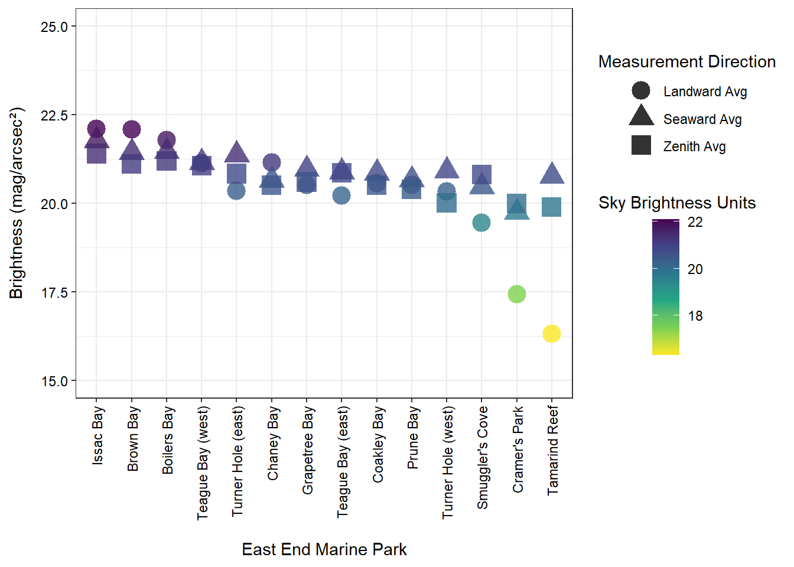
Rearrange regions with code: West, North, South, East
stx_lw_analysis$REGION <- factor(stx_lw_analysis$REGION,
levels = c("West End", "North Shore", "South Shore", "East End"))STAR Disorientation Data
Create a data name.
stx_disorient <- read.csv("Disorientation Data.csv")Organize Property Types Across Years
property_type <-stx_disorient%>%
select(Year, Property.Type)%>%
filter(Property.Type!="")Organize Locations Across Years
location_reports <-stx_disorient%>%
select(Year, Location)%>%
filter(Location!="")%>%
drop_na()Bar chart tallies property types across years Result: Nest disorientation occur more at DSPR and resorts.
ggplot(property_type, aes(x = as.factor(Year), fill = Property.Type)) +
geom_bar(position = "dodge") +
scale_fill_brewer(palette = "Set2") + #colorblind-safe colors
labs(
title = NULL,
x = NULL,
y = "Number of Disorientation Reports",
fill = "Development Type") +
theme_minimal() +
theme(
text = element_text(color = "black"),
axis.text = element_text(color = "black"),
axis.title.y = element_text(margin = margin(t = 0, r = 15, b = 0, l = 0)))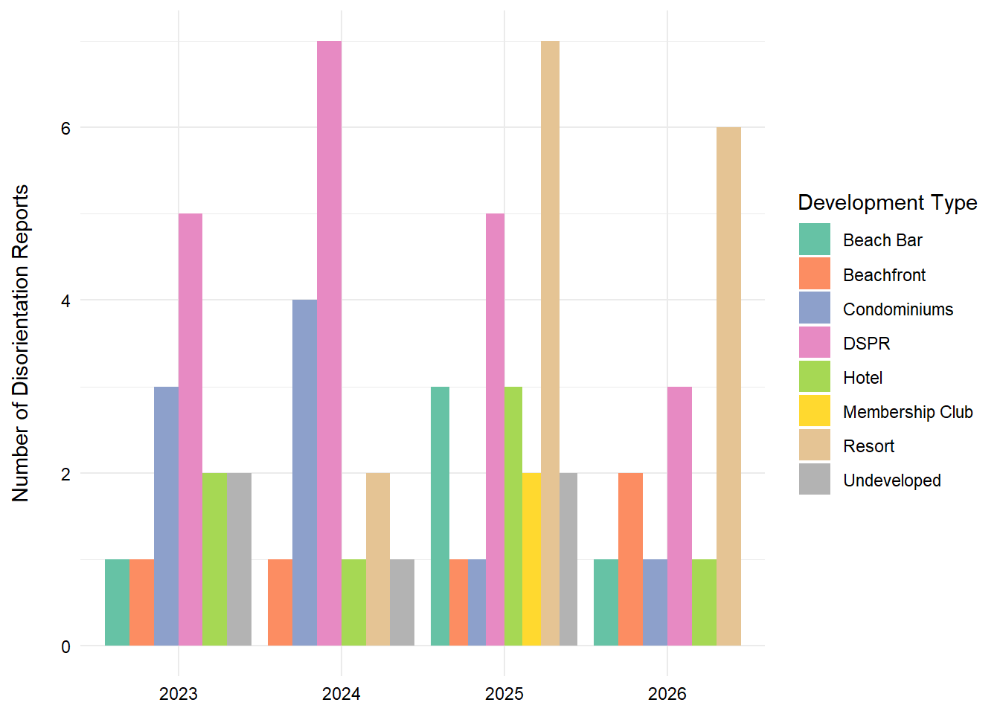
Top 5 locations with the highest disorientation reports. Out of the 5 Locations 4 of them are in the West-End